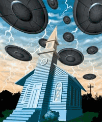One of the most popular topics for children's books
is stories from the Bible. Nearly every one of these bible stories has been
altered or watered down to "protect" the minds of innocent children
from the horror and shame that is GOD'S WORD.
The REST of the
Story
The Bible has maintained its popularity largely due to the illiteracy of
its followers. The literal meaning of "illiteracy" is the inability
to read, but when we speak of biblical illiteracy we mean the inability to read
the bible for oneself. Believers are often raised to trust in the stories that
they were taught from their childhood about the Bible and they seldom take the
time to read these stories for themselves. The inconsistencies are perpetuated
by parents who teach their children the same errors which they were taught when
they were young. When adult believers actually do read them, they tend to
ignore those portions which don't reflect the watered-down versions they have
grown up with.
Preachers help maintain the ignorance of their followers by skirting around
the unpleasant passages and stories in the Bible, focusing instead on the same
old passages such as John 3:16 "For God so loved the world that he gave
his only begotten son...". There have been instances where freethinkers,
such as Robert Ingersoll, have offered rewards of thousands of dollars to any
preacher who would read specific passages directly to their congregation as
they are contained in the Bible. No preacher was willing to read these
passages. The reasons they don't want their congregations to be informed of the
truth are quite simple: the Bible cannot stand up to critical scrutiny.
Believers are told that they should rely on FAITH rather than trust what they
see with their own eyes. The Bible itself warns that we are not to trust in our
own ability to reason or understand (Proverbs 3:5). With that in mind, we now
present a rational analysis of some old favorite Bible Stories as well as a few
of those ones your local pastor refuses to talk about in Sunday School.
NOTE: The analysis that follows is largely based on the irrational belief
that an actual God(s) exists. For a more probable analysis of who the authors
of the Bible were talking about when they used the word "God," see
The Immaculate Deception..
Index
The Bible says that in the "beginning" God created the heaven and
the earth. (Genesis 1:1) Here's the story they don't tell you:
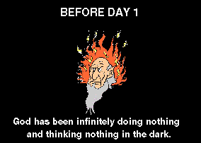Before anything existed there was this
guy we'll call God who had existed for all of the eternity before anything
existed doing nothing and thinking nothing, then he had a thought; the first
"causeless cause" (the very first thing which had ever happened
without something causing it to happen...confused yet?) What was this thought?
Probably, "This sucks, I'm bored." When people see the complexity of
the universe, they believe it couldn't have randomly come into being so there
must be a designer who planned and created the universe. What they fail to
realize is that any designer who could come up with a complex universe must
also be just as complex as his design, so who designed the complex designer?
The reply is "no one did, the designer always existed." Our response
is, that if that complex designer can exist without a designer, then our
complex universe doesn't need one either.
Humans don't like to think about the issues of infinity because we are
linear thinkers (we think of events occurring along a time line) and we can't
relate our limited perspective to infinity. The faithful prop God up to solve
infinity much like primitive man looked at the night sky and thought of it as a
curtain with holes in it. They don't want to think about the reality of
infinity so they leave the thinking in the hands of God. Unfortunately this
doesn't solve the problems of infinity, it merely hides them under the rug of
"God."
On the first day of creation this God
thought, "Hey, let's have some water here." And poof there was water
and God floated around in it. This water was dark and had no form. The Bible
called this water, the earth (Genesis 1:2). Then God said, "let's have
some light here." Poof we have light. What is the source of this light? We
don't know, since this is only the first day of creation and the sun and the
stars aren't created until the fourth day (Genesis 1:14). At the end of the
first day of creation, God decides that he doesn't want the light and the
darkness to be together anymore so he seperates them and calls them day and
night. How darkness was able to exist in the presence of light before God
seperated them is another of those great biblical mysteries.
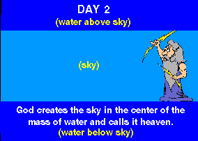 On the second day God is still floating
aimlessly in this mass of water so he decides to split the water up into two
parts by putting an expanse of open space in the middle of the water. God calls
this expanse (or firmament) "Heaven" (Genesis 1:6-8). Here we see the
first example of God using his magical powers to part seas in the Bible. Later
we get to see God impart this same water-parting power to his human lackeys;
Moses (with a wave of his hand-Exodus 14:21), Joshua (with a magic ark-Joshua
3:15-16), and Elijah and Elisha (with a magic cloak-2 Kings 2:8, 14).
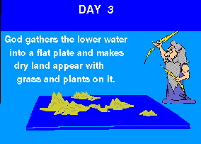 On the third day of creation, God
gathered up the lower water and formed a flat surface with four corners. These
corners are mentioned throughout the Bible (Ezekiel 7:2, Revelations 7:1). From
this table of water, God "let the dry land appear." God then made
grass, herbs and fruit plants appear on the land. No mention is made of any
aquatic plants, but we will trust that God probably made those on this day
also. Let's take a look at what the Bible says the earth looks like at this
point.
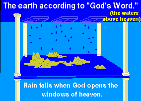When we visualize the world that the
Bible describes, we wonder why the Hebrews thought that God would put a body of
water above heaven. The reason for this is that the ignorant Hebrews believed
that rain was water leaking through windows in heaven that held the upper water
above the earth. When God flooded the earth in the Bible, he did it by opening
these windows and allowing the upper water to flood down over the earth
(Genesis 7:11). The Hebrews also believed that this water was held above the
earth by pillars (Job 26:11) and that the earth itself sat on pillars (1 Samuel
2:8, Psalms 75:3). They thought that earthquakes were caused by God shaking
these pillars (Job 9:6). Modern science has shown us that the Bible's concept
of the earth is absurd. This evidence alone should be sufficient to prove that
the Bible is nothing more than the ramblings of ignorant and superstitious
savages. Yet believers continue to believe...
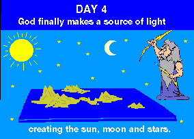 When day 4 rolls around, God finally
decides to create the sun, moon, and stars. Where the light of day was coming
from on the other three days is a mystery. Perhaps it was simply God's
illustrious personality? The Bible says that God made two great lights (the sun
and the moon), but we know from exploration that the moon is not a light since
it is merely reflecting the light of the sun. The Bible legitimizes the occult
practice of astrology on this day by stating that one of the purposes of stars
is to serve as "signs" (Genesis 1:14).
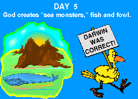 On the fifth day the Bible says that
God created great sea monsters (the original Hebrew word for sea monsters is
translated in modern terms as "whales") and God calls tells the water
to produce an abundant amount of moving creatures that are alive. It's
comforting to know that God didn't make any moving creatures that AREN'T alive.
God also creates all the birds on this day. Since God hadn't created insects
yet, we must assume that all the birds ate seeds and fish on this day.
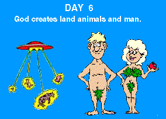 On the last working day of the
creation, God makes all the rest of the creatures that live on the land to
include man. When God decides to make man he says "Let us make man
in ourimage after our
likeness..." (Genesis 1:26) This passage reveals quite a bit
about the true physical nature of God. It tells us that there is more than one
God and it tells us that these Gods have a body which has a form and features
similar to ours (an image is defined as a representation of the form and
features of something). As we have already covered in The Immaculate Deception, the Gods were able to
"create" man in their image by splicing their DNA into that of the
primates that were to become man.
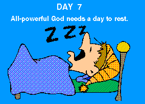When God finished with his work, he had
to take a day to rest. We can imagine that anyone who did that much work would
need to take a rest, especially since he had spent the previous eternity
sitting there doing nothing. God enjoyed his day of rest so much that he
decided that everyone should spend the seventh day of each week resting and
telling God what a great job he did with his creation. He was so determined
that people respect his special day that he commanded that any who didn't
respect it should be stoned to death.
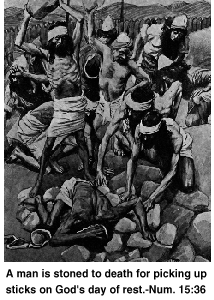 The Bible tells us of an instance where
a man was stoned to death just because he picked up sticks on God's special day
of rest. The man was probably gathering sticks for his family's cooking fire.
In this story, the people aren't sure what they should do with this man so they
take him to Moses. God then tells Moses that this man must be put to death.
God's true sense of mercy and justice are made quite clear in this instance,
when a man is put to death for simply picking up sticks. As the attendance at
churches across this country continues to decline, we're sure that preachers
will wish they could return to the days when those who broke the sabbath and
didn't go to church could be executed.
If a God created the world, then when we look around this world, we should
see the nature of that God reflected. What do we see when we look around? We
see life struggling to survive off the suffering of others. Animals are forced
to mutilate and devour other animals in order to stay alive. Eat or be eaten.
This is the nature of God. When creationists preach that a perfect God created
this world, they often ignore the fact that this creation is full of
imperfection. Genetic mutations occur in plants and animals which cause
handicaps, suffering and injustice. Take, for instance, the mentally retarded
child or the child that is born without limbs. If God is supposed to be so
perfect, why did he create such a potentially imperfect world? And some people
are so naive as to believe that heaven will be perfect, when he can't even get
earth right!
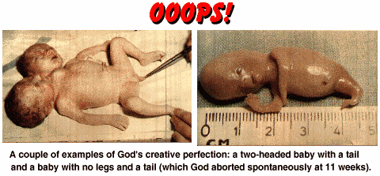
After God created the earth, he decided to make man so he would have someone
to till the earth. When God created the first man, he made him ignorant, like
the beasts of the field. Adam, the first man, didn't possess the ability to
form concepts of value in his mind. Adam was nothing more than a robot, waiting
to do whatever his programmer demanded. God created this man to be the gardener
of the Garden of Eden (Genesis 2:15). It was God's intention that man be a
slave in this garden forever without the ability to think for himself or the
ability to choose right from wrong. For some strange reason God planted a tree
in the garden that would give man the same abilities that God wanted to keep
from him. God had also planted another tree in the garden which bestows eternal
life.

God then told man that he could eat
from every tree in the garden except the tree of the knowledge of good and evil
because if he ate from that tree he would die that same day (Genesis 2:17). God
had given the robot-man his instructions: don't partake of that tree.
Interestingly God didn't mention the tree of life to man nor did he tell man
that he was not to partake of the fruit from it. Perhaps God had made it
inaccessible to man so he didn't think man would get to it in his ignorant
robot-like state.
God then makes the first female by taking a rib from Adam and turning it
into a woman. Women will now be considered the property of man because they
came from man's body.
Man obeyed God's instructions like a good robot until one day when a crafty
serpent approached Eve and asked her to repeat the instructions God had given
them regarding the fruit of the tree. Eve repeated God's instructions like the
robot that she was, telling the serpent that God told them they would die the
day they ate that fruit. The serpent then reveals the deception that God has
tried to force upon man by telling Eve that God knows that you won't die, but
that you'll become like him and you'll know good from evil and be able to think
and judge for yourself. The serpent's instructions filled the empty mind of the
robot Eve who didn't know that it was wrong to listen to a serpent or that it
was right to obey God and she took the fruit and gave some to Adam, who took it
from her like the robot that he was at that time. Once they ate the fruit, they
did indeed become like God and they immediately realized that what they had
done was wrong. They also realized that the Gods they had seen walking in the
garden wore clothing and they were naked so they made themselves aprons out of
leaves.
Then they heard God's voice approaching (God was taking a stroll in the
garden during the cool of the day...interesting behavior for something without
a body) and they hid from God in the bushes. God looks around and can't find
Adam so he calls out "Hey, Adam! Where are you?" Now Adam, comes out
and tells God that he was afraid of God because NOW he knew that he was naked
and had disobeyed God's instructions. God realized that the only way Adam could
know that he had been naked and done wrong was if someone told him he was naked
or if Adam had eaten of that fruit which gave man the knowledge of good and
evil. Rather than take responsibility for his actions, the first man points the
finger of blame at the woman saying, "That woman that you made for me gave
me the fruit and I ate it." When God turns to the woman she says, "It
wasn't my fault, the serpent tempted me." So does God in his infinite
wisdom and perfect justice blame himself for putting the tree in the grasp of
man? No. Does he blame himself for leaving man to the wiles of more intelligent
creatures? No. Does he blame himself for expecting man to be able to choose the
right and obey when he has kept that knowledge from him? No. God punishes the
serpent, the woman, the man, and condemns all of man's future offspring to be
"fallen" and "sinners."
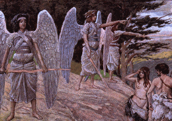After promising man a life of turmoil
and suffering, God made clothes for Adam and Eve and dressed them. Then God
talks to the other Gods and says, "Behold the man is become as one of us,
to know good and evil: and now lest he put forth his hand, and take also of the
tree of life, and eat, and live for ever:..." (Genesis 3:22) God then
sends man out of the garden and sets up angels to guard the tree of life. God's
position of authority over man is safeguarded once more.
Christians are taught that Jesus was the only Son of God, but the Bible
tells us about other sons that God had. The first mention of these sons of God
comes after Adam and Eve are kicked out of the Garden of Eden. During that
time, man had begun to multiply and cover the face of the earth and men began
to have lots of daughters. The Bible tells us that the sons of God saw these
daughters of men and they took them to be their wives. These sons of God then
proceded to have children with human women. These children grew up to become
mighty men (Genesis 6:1-4). Similar stories can be found in Greek mythology of
heroes coming from the unions of Gods who mated with human women. Christians
who refuse to believe these Greek mythologies (such as the story of Zeus mating
with a human female and creating Hercules) should reconsider the reasons they
believe the biblical versions.
These sons of God are mentioned again in the book of Job. Twice there are
instances where the sons of God come to present themselves before God to report
on their activities (Job 1:6, 2:1). Exactly what are these sons up to? The
Bible suggests that they are reporting on the state of affairs on earth. Why
the all-knowing, all-seeing God, needs someone to tell him what's going on is a
mystery. When the sons of God come to visit God, Satan decides to join them.
Apparently the authors of the Bible thought that Satan was able to freely enter
God's presence. The Bible claims that Satan would annoy God by reporting to God
anytime one of his saints committed a sin. God finally grew tired of Satan's
badgering and had him thrown out of heaven (Isaiah 29:20, Rev. 12:10).
Noah's Ark is the predominant theme in many baby-oriented products that are
sold on the american market. Noah's boat and its cargo of happy, friendly
animals grace the walls of baby nurseries across the nation.
 Children are taught that God saved Noah and
the cute animals from the flood, but no mention is ever made of the billions of
cute animals that drowned horribly in writhing agony. And heaven forbid
focusing on the countless, innocent little babies that God drowned in his
irrational act of vengeance. Certainly a God who could create organized matter
by a mere thought could have come up with a better way to "clean the
slate," if that was all he was interested in doing. The Bible tells us
that God was sorry ("repented") that he had made man on the earth
(Genesis 6:6). In another part of the Bible, it claims that God doesn't repent
because he never makes mistakes like man does (1 Samuel 15:29). So, if God was
sorry he had made man, why didn't he just "unmake" man? Why did the
creator of the majesty of the universe not simply send man back into the
cornfield of oblivion from which he had pulled him? It's obvious that God
wanted man to suffer, and not only those who had made God sorry he had created
man, but all the innocent children and all the blameless animals. God somehow
kept the fresh water fish from dying when the salt water of the oceans covered
the earth, certainly God could have used his miraculous powers to spare the
land animals and the innocent children the horror of drowning...but he chose
NOT to. We can only imagine the horror of bloated, dead animal and human bodies
which must have littered the land after the flood waters receded.
Children are taught that God saved Noah and
the cute animals from the flood, but no mention is ever made of the billions of
cute animals that drowned horribly in writhing agony. And heaven forbid
focusing on the countless, innocent little babies that God drowned in his
irrational act of vengeance. Certainly a God who could create organized matter
by a mere thought could have come up with a better way to "clean the
slate," if that was all he was interested in doing. The Bible tells us
that God was sorry ("repented") that he had made man on the earth
(Genesis 6:6). In another part of the Bible, it claims that God doesn't repent
because he never makes mistakes like man does (1 Samuel 15:29). So, if God was
sorry he had made man, why didn't he just "unmake" man? Why did the
creator of the majesty of the universe not simply send man back into the
cornfield of oblivion from which he had pulled him? It's obvious that God
wanted man to suffer, and not only those who had made God sorry he had created
man, but all the innocent children and all the blameless animals. God somehow
kept the fresh water fish from dying when the salt water of the oceans covered
the earth, certainly God could have used his miraculous powers to spare the
land animals and the innocent children the horror of drowning...but he chose
NOT to. We can only imagine the horror of bloated, dead animal and human bodies
which must have littered the land after the flood waters receded.
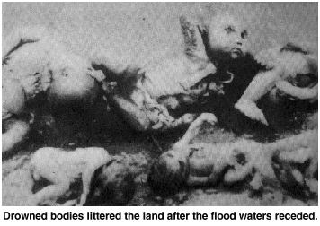When asked about the senseless deaths of
innocent children, both born and unborn, believers claim "they went to a
better place," and "now they're in the loving arms of Jesus."
With that type of mentality, they should be supporting abortion clinics, not
bombing them. Every aborted fetus ends up in the loving arms of Jesus. Spare
the innocent children the horrible experience of growing up in an evil society,
send them all to the loving arms of Jesus. This is the kind of thinking that
must have run through the minds of the "men of God" while they were
slaughtering millions of innocent children and babies: "Happy shall he be,
that taketh and dasheth thy little ones against the stones." (Psalms
137:9)
Christians often cry that the people who drowned were warned, "but they
wouldn't listen!" However, the actual story of Noah's Ark in the Bible
makes no mention of God warning anyone except Noah. Pictures from children's
Bible story books often show Noah working hard on the Ark while neighbors scoff
and laugh at him. While the actual version of the story in the Bible doesn't
mention anyone knowing about the ark except Noah. We understand that Christians
feel a need to rationalize the deaths of all of humanity by thinking that
"they were warned," but the truth is, the only warning was given to
Noah and he kept the secret to himself.
Most people think that Noah was told to take only two of each animal into
the Ark, but God actually told Noah to take two of all the animals that were
considered "unclean," Noah was to take seven of all the
"clean" animals and the birds. The reason God wanted more of these
animals becomes quite clear once Noah got off the Ark after the flood. Noah
took the clean animals, slaughtered them and offered them as a burnt offering
to God on an altar! God goes to all the trouble of saving the animals from
drowning just so he can have Noah sacrifice them on a fiery altar! God likes
the smell of the burning flesh so much that he decides not to drown every
living thing, like he had just done, ever again (Genesis 8:21). God must really
love the smell of a good barbecue.
The story of Noah usually ends with God making a rainbow to show that he
won't destroy all living things on the earth "with water" again (fire
maybe but not water). Let's look at what Noah did after the flood story. He
settled down and planted a vineyard so he could make wine. Then he got drunk
and naked and passed out in his tent. Sounds like God knew what he was doing
when he chose Noah to be the only human worthy of surviving the flood. The
father of the future races of humanity was a drunkard. Maybe they should add
wine bottles to those cut-outs of animals, arks and rainbows we always see on
baby blankets.
- Hustling Husband -
After God made man unable to understand each other at The Tower of Babel, he left man alone for several hundred
years until a man named Abraham was born. Abraham came from a family that
worshipped many different Gods. One of these Gods, talked to Abraham and told
him to leave his family and travel to another country and if he did, this God
promised to make him a great nation. So Abraham did what this God told him to
do and he took his wife, Sarah and his nephew, Lot and all their slaves and
possessions and traveled to a land called Canaan. While they were journeying
near Egypt, Abraham became afraid that the Egyptians would see his beautiful
wife and they would kill him and take her so he told his wife to tell the
Egyptians that she was his sister and not his wife. When the Egyptian princes
of Pharoh saw her, they told the Pharoh about her and the Pharoh had her
brought to his house so he could have sex with her. The Pharoh purchased Sarah
from Abraham with sheep, oxen, camels, asses, and slaves. Abraham still didn't
tell them that she was his wife. Abraham, God's chosen man, was pimping his
wife out as a prostitute and did God punish HIM for doing this? NO! God sends a
plague to the Pharoh and his household! The Pharoh had done nothing wrong but
God punished him anyway. When the Pharoh learns that the plague is because he
was having sex with the wife of God's chosen man, he says, "Abraham, what
have you done to me? Why didn't you tell me she was your wife?" Then
Pharoh gave Abraham his wife back and sent him on his way along with all the
riches that Abraham had gained from pimping his wife (Genesis 12:18-20).
- Loving Father -
Abraham and Sarah didn't have any children but God promised that Abraham's
offspring would become a great nation. Sarah felt like she was too old to have
children so she told Abraham to have sex with her maid (slave), Hagar, so he
would have children by her. Abraham has sex with his wife's maid and she gets
pregnant. When Sarah see that her maid has gotten pergnant, she gets jealous
and tells Abraham that now her maid is making fun of her because she got
pregnant while Sarah couldn't. Abraham tells her, "Hey, she's your maid,
do whatever you want to her." So Sarah, beats her maid and the maid runs
away into the wilderness. An angel finds the maid in the wilderness and tells
her to go back and submit to the punishments that Sarah will give her. The
angel tells her that she will have a son and that God will make her the mother
of so many, that they won't be able to be numbered. The Moslems consider
themselves to be descended from the son that she has. So Hagar returns to Sarah
and delivers a son. God then makes a covenant with Abraham that if all of the
male children born to him will cut off the foreskin of their penis, he will be
their God and he will give them the land of Canaan (which happens to be
occupied by the "unchosen" at the time). Eventually, Sarah gets
pregnant and has a son, Isaac. By this time, Sarah's jealousy of Hagar and her
son has reached a pinacle and she accuses Hagar's son of mocking her and
demands that Abraham throw him and his mother out into the wilderness. She then
gives the real reason for her demands, "I don't want him to share the
inheritance with my son, Isaac." (Genesis 21:10) This demand bothers
Abraham, but not God, who tells Abraham, "Don't worry about your firstborn
son and his mother, just do whatever your wife Sarah wants done to them."
(Genesis 21:12) So in the morning, Abraham gave Hagar some bread and a bottle
of water and sent her and his firstborn son, Ishmael, alone into the
wilderness. Abraham should be nominated for father of the year.
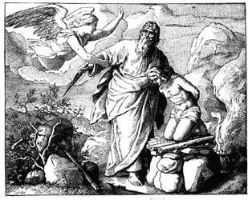 One day (Genesis 22:1),
God decides to "tempt" Abraham (even though the Bible says that God
doesn't tempt men, Satan does - James 1:13) by commanding him to sacrifice his
son, Isaac on an altar to God. The Bible makes no mention of Abraham
questioning such an evil command. I hope that any believers who may have read
this article this far, are better parents than Abraham was. Unfortunatley,
history has shown that when dellusional people think that God has commanded
them to commit murder and kill even their own children, they will obey just as
blindly as Abraham.
While Abraham was being visited by three angels, he was told that his old
wife would have a son. God decided to also tell Abraham about his plans for the
cities of Sodom and Gomorrah. The Bible tells us that God had heard that the
people of those cities were doing something "very grievous" (Genesis
18:20) so God was going to go down and see if things were as bad as he had
heard. Why an all-knowing God needed to go "see for himself" is a
mystery. Abraham cautiously proceeded to make a deal with God at that point,
sort of like a biblical "The Price Is Right," the conversation going
something like this:
Abraham: Hey, God, you wouldn't destroy the righteous
along with the wicked would you? Uh...let's say there were fifty righteous
people in the city, wouldn't you spare the lives of the innocent by not
destroying the entire city? That wouldn't be very Godly of you, I mean...to
punish the righteous as if they were wicked. You're the judge of all the earth,
shouldn't you do the right thing?
God: If I find fifty righteous, I will spare the city for their sake.
Abraham: Now, look at what I've done...me a lowly piece of dirt, who
dares to question God. But let's say there were only five missing from the
fifty. Would you destroy the entire city just because there were five missing?
God: I won't destroy the city if I find forty five righteous in it.
Abraham: Well, what if there are only forty?
God: I won't destroy it if there are forty
Abraham: Now, don't get angry at me, but what if there are only
thirty righteous people there?
God: I won't destroy it if I find thirty there.
Abraham: Well, I've put my foot in this far, let's say there are only
twenty righteous...
God: I won't destroy it if I find twenty.
Abraham: Don't get angry and I will ask this last time. What if there
are only ten righteous there?
God: I won't destroy it for the sake of ten righteous people.
(Genesis 18:23-32)
God wasn't able to find even 10 innocent women or children in the two
cities. Christian versions of the story claim that God heard the cries of
innocent children (See
Jack Chick's
"Doom Town", apparently God didn't consider these chidlren to be
very righteous.
Abraham's nephew, Lot was living in
Sodom and two angels came to warn him that the city was about to be destroyed
because of its sinfulness. What exactly were these cities doing which was so
"sinful?" Because a mob came to Lot's house to try to rape the
angels, modern Christians believe it had to do with homosexuality. If
homosexuality was the sin of Sodom and Gomorrah, why didn't God destroy the
city of Gibeah when they tried to rape a visiting man? (Judges 19:22) The Bible
tells us that the sins of Sodom were "pride, fulness of bread, and
abundance of idleness" they also didn't "strengthen the hand of the
poor and needy" (Ezekiel 16:49). Let's take a look at these supposed sins.
Pride, fulness of bread and abundance of idleness suggest that the cities were
self-sufficient, they were productive enough as a civilization to not need God.
We have already discussed why God would consider self-reliance to be sinful;
God wanted to keep man busy (See The Tower of Babel).
As for not strengthening the hand of the poor and needy, Jesus himself was
guilty of that same "sin" when he allowed a woman to waste an
expensive ointment on his feet instead of selling it to feed the poor as one of
his disciples suggested (Matt. 26:6-11, Mark 14:3-7). These reasons by
themselves don't seem sufficient to warrant God sending a special hit-team to
destroy them. For the real reason Sodom and Gomorrah were destroyed, see
Independence Day or "The Rapture?"
The only people which God considered righteous enough to save from the
destruction of the cities was Lot, his wife, and his two daughters. Lot's wife
is killed because she dared to look back at the city and Lot's
"righteous" daughters turned around and got him drunk and raped him
so that they could get pregnant. God's definition of "righteous"
apparently has little to do with one's personal morality or actions, since
innocent children don't qualify but rapists do.
Abraham's son, Isaac had two sons of his own. They were twins named Esau
(who came out first) and Jacob. According to the Hebrew law, the firstborn son
was to receive the best part of the father's inheritance. Esau was a cunning
hunter and Jacob was a simple tent dweller. Isaac loved his firstborn son and
enjoyed the food that he was able to capture but Isaac's wife loved the
secondborn son, Jacob most of all.
Once, Esau went on a hunting trip and was unable to obtain food. By the time
he had reached his homeland, he was nearly starved to death. His brother Jacob
was cooking soup in the field when Esau stumbled upon him. Seeing the food, he
begged his brother to allow him to eat or else he would die from starvation.
His brother sees, not a chance to help his older brother, but an opportunity to
take advantage of his misfortune. Jacob says, "I'll sell you some of this
soup for your portion of our father's inheritance." Esau responds,
"Hey, I'm about to die. If I die what good will my inheritance be to
me?" (Genesis 25:32) So in this manner, Jacob showed his brotherly love by
robbing a dying brother of his birthright for a bowl of soup. Christians are
taught that Esau was the one who did something wrong by not truly appreciating
his birthright, ignoring the fact that it was Jacob who took advantage of his
brother when he was in dire need.
When Isaac had grown old and felt like he was approaching his deathbed, he
decided to give his father's blessing to his oldest son, Esau. Isaac had lost
his vision at that point of his life and he wanted Esau to bring him some
venison so Esau went out to the field to hunt for his father. While Esau was in
the field, Isaac's wife heard what was going on and came up with a plan to
deceive her husband and make him give the father's blessing to Jacob instead.
So she told her plan to Jacob, and this is how the story went:
Rebekah: I heard your father ask your brother to bring
him some venison so he could give him the firstborn's blessing. I want you to
bring me a couple of goats from the herd and I will prepare them so that your
father will think they are venison and then you can pretend like you are Esau
and he will give the blessing to you.
Jacob: But, my brother Esau is hairy. What happens if my father
touches me and finds out that I'm not Esau? Then he'll think I'm trying to
deceive him (DUH! Why do you think he would think that???) and he will
give me a curse instead of a blessing.
Rebekah: Don't worry about any curse, you just do what I say.
(Genesis 27:6-13)
So Rebekah takes the goats and prepares them the way Isaac likes and puts
the goat skins on Jacob's hands and neck. Jacob takes the meat to his father
and the conversation goes like this:
Jacob: Dad?
Isaac: I'm right here. Who is there?
Jacob: It's me, your firstborn son, Esau. I brought the meat you
asked for. Come eat it and give me your blessing.
Isaac: Wait a minute. How were you able to find a deer so quickly?
Jacob: God brought a deer to me.
Isaac: Hmmm...come over here so I can feel you and make sure you are
my son Esau and not some deceptive imposter.
Jacob has not only lied to his father to steal his brother's property but he
has brought GOD into his lie. God should have struck him dead, but for some
unknown reason, God didn't. Jacob approached his father and his father felt the
goat fur on his hands and neck. Isaac says "You have the voice of Jacob
but the hands of Esau." To make sure he wasn't being deceived, Isaac asked
Jacob one more time, "Are you really my son Esau?" Jacob stuck to his
lie, telling his father that he was indeed his brother. So Isaac blessed Jacob
with the blessing that was meant for Esau. Right after Jacob left his father's
tent, the real Esau showed up with his meat. Now the truth becomes clear to
Isaac; his son has deceived him, but for some strange reason, the blessing must
stand as it was given. Isaac was only able to give Esau a lesser blessing now.
This reveals an interesting aspect of the Hebrews' understanding of
"blessings," and that is that once given, they cannot be rescinded.
You would think that once Isaac realized he had been deceived that he would
have been able to take back the blessing which Jacob had gained by deception,
but that isn't what happened.
Isaac blessed Jacob with the following:
Therefore God give thee of the dew of heaven, and the fatness of the
earth, and plenty of corn and wine:" - Genesis 27:28
Since God is the one who fulfills the blessing, this story suggests that God
can be cheated and he can't do what is just and right by giving the blessing to
the one who was supposed to get it (Esau). How very limited is the God of the
Bible!
When Esau learns that his brother has once again cheated him out of what
should belong to him, he vows to have justice. Rebekah sends Jacob away to live
with relatives for over 14 years to keep him safe from his brother's
justifiable wrath. But Esay stays with his father and cares for him in his old
age rather than pursue his deceptive brother and get his revenge. For the story
of Jacob's shenanigans during that time see Sex,
Drugs, and Husband Swapping.
Jacob eventually returns to the land of his father but he realizes that his
brother has vowed to kill him for all the injustices he has made his brother so
he decides to send messengers out to meet his brother's men. The messengers are
told to tell Esau that his brother Jacob is coming home with lots of animals
and servants but the messengers come back to Jacob telling him that Esau is
already coming to meet them and that he has 400 men with him. Jacob realizes
that he is in dire straights and that justice is about to meet him head on so
he divides his group into two groups so that if Esau and his men attack the
first group, the second group will have a chance to escape. Then Jacob prepares
a bribe of goats, sheep, camels, cattle and sends them out to meet Esau in the
hopes of gaining his mercy. That night a man wrestled with Jacob and when Jacob
defeated the "man" we discover that it was not a man but God himself
which Jacob had been wrestling. After this wrestling match, Jacob's name is
changed to "Israel" because he was able to wrestle with God and
prevail. Jacob confirms that it is God that he wrestled with when he says,
"I have seen God face to face, and my life is preserved." (Genesis
32:30)
Finally Esau's men approach Jacob and we get to see Jacob's bravery at its
best. He puts his wives and children in front of himself, placing the wife he
hated (Leah) and her children and handmaids in front of the wife he loved
(Rachel) and leaving himself cowering behind them all. (Genesis 33:1-2)
What happens next is one of the most touching scenes of human brotherly love
and kindness exhibited in the Bible. Esau, the brother who has been abused and
mistreated by his own twin all of his life, doesn't strike out at his brother,
but he bows down before each of the wives he passes and runs to his brother,
Jacob, taking him in his arms and crying on his neck. When he learns that the
flocks he passed were a gift, he refuses to accept them saying that he has more
than enough already. His love for his brother has driven the need for vengence
out of his heart and he welcomes Jacob back home with all the love a brother
can muster (Genesis 33:3-9).
How does God respond to this act of love and mercy? The Bible tells us that
God hated Esau (Romans 9:13) but loved Jacob. Why is this? The Bible tells us
that it is not our place to ask why or to judge God's decisions. It goes on to
say that the clay has no right to ask the potter "why did you make me like
this?" (Romans 9:20-23) Yet, it is the clay that will burn in the fires of
hell for all eternity because it was made too weak to stand the test of fire of
the kiln of life? The Bible has the gall to say that if God unjustly condemns a
man to hell just to make himself more glorious then that is God's right to do
so. We will not stand for such blatant injustice! If God cannot stand up to the
judgment of reason and justice then he should be cast off his throne. If you
haven't done so already, toss this evil tyrant off the throne of your heart
today!
With the release of the movie "The Prince of Egypt" the public is
once again flooded with the biased version of the story of Moses and the Exodus
of the Hebrews from Egypt. The Pharoh is always painted as an evil man who
enslaved the Hebrews and did everything in his power to keep them as his
slaves. We often wonder what could make a man so stubborn that it took numerous
plagues and the death of his own firstborn before he let the Hebrews go free.
The Bible tells us what could make a man so stubborn; God's manipulation.
The Hebrews moved to Egypt because there was a famine in their lands and
they were able to get food in Egypt. Over time, they began to become so
numerous that the Egyptian king felt that they threatened his own people so he
made them begin to work for him. To keep the Hebrews from multiplying so
quickly, the king supposedly ordered that the Hebrew newborn males be killed.
To protect her son, Moses, a hebrew woman put him in a basket and he was raised
in the Pharoh's household as an Egyptian. One day, Moses saw an Egyptian
hitting a Hebrew so he waited until the Egyptian was alone and he murdered him.
The next day Moses saw a Hebrew hitting another Hebrew and he told them not to
fight. The first Hebrew replied, "Who are you to tell us what to do? And
what are you going to do about it, kill me like you did that Egyptian?"
Moses realized that everyone would know that he murdered the Egyptian now, so
he ran away to another land. The people of that land (Midian) accepted him as
one of their own and he married one of their women and had children by her.
In time, God came to Moses and told him that he was going to be the one to
free God's chosen people from the bondage that he had put them in under Pharoh.
Moses didn't want the job and tried several ways to avoid the task. After
convincing Moses that he couldn't get out of this, God told him that Pharoh
would not want to let the Hebrews go. How did God know this? Simple. God
intended to MAKE Pharoh's heart hard so that he wouldn't want to let the people
go (Exodus 4:21, 7:3).
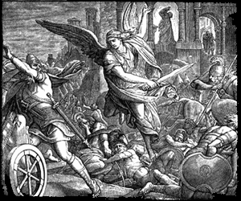Pharoh lost his free will in
the matter because God was going to control Pharoh's heart and mind. God said
that he would repeatedly make it so that Pharoh didn't let the people go just
so he could prove his power to the Egyptians and the Hebrews. God wanted a
chance to show off his mighty strength but the only way to do it was to
manipulate the mind of Pharoh and the Egyptians would be the ones to pay the
price. Each time Pharoh wanted to get rid of the Hebrews, God would harden his
heart and then send a plague to harm the Egyptians. There is no explanation of
what the individual Egyptians may have done to deserve the suffering that God's
"showing off" brought them. God merely says that he is hardening
Pharoh's heart so that Moses can brag about what God did to the Egyptians
(Exodus 10:1-2) Here is an accounting of the suffering which God caused through
his interference with his "puppet" Pharoh's heart.
- Pharoh ignores Moses' magic shape-shifting-staff because God hardened his
heart -Exodus 7:13-14
- The waters in the river turn to blood and the fish die, poisoning the
drinking water of the Egyptians because of God's heart hardening - Exodus
7:22
- Plagues of frogs cover the land because of God's manipulations of Pharoh's
heart - Exodus 8:15
- Plagues of lice afflict both man and beast because of God controlling
Pharoh's heart - Exodus 8:19
- Swarms of flies and the disease they carry cover the land because God won't
let Pharoh think for himself (Pharoh repeatedly shows that he is willing to let
the Hebrews go but God turns around and hardens his heart - See Exodus 8:28) -
Exodus 8:32
- Disease kills all of the Egyptians' cattle, horses, asses, camels, oxen and
sheep while sparing the Hebrew livestock because God wasn't finished showing
off - Exodus 9:6-7
- The Egyptians break out with festering boils, blisters and pustules and
can't even stand, yet God hardens Pharoh's heart once more - Exodus 9:12
- God ups the anty and starts killing the Egyptians with pestilence and
burning hail which burns up the crops and destroys the Egyptians' food
supplies. Pharoh shows his true heart by surrendering to Moses' demands (Exodus
9:27-28) but God won't let him off that easy and hardens his heart once more -
Exodus 9:35
- God sends locusts to eat what remains of the crops and Pharoh again
surrenders (Exodus 10:10-11) only to have God do his thinking for him once more
and harden his heart - Exodus 10:20
- God covers the land with darkness for three days then hardens Pharoh's
heart some more - Exodus 10:27
- God's grand finale of injustice, he kills the firstborn of all the Egyptian
humans and animals (Exodus 11:5) so that the world will know that God
discrimates with extreme prejudice based on race and/or national origin (Exodus
11:7) and again, God hardens Pharoh's heart - Exodus 11:9-10
- The Hebrews steal the property of the Egyptians, the Bible conveniently
calls it "borrowing" - Exodus 12:35-36
- While the Hebrews are leaving Egypt, God decides to harden Pharoh's heart
one last time just to let the Egyptians know that "I am the Lord."
(Exodus 14:4) This results in the deaths of all the horsemen and horses of
Pharoh's army (Exodus 14:28) - Exodus 14:17-18
The Bible tells us that the Hebrews sang a victory song which sums up the
loving, tender mercies of the God of the Bible...
"The LORD is a man of war: the LORD is his name. - Exodus
15:3
A popular Bible story tells how the Hebrews made a golden calf and began to
worship it while Moses was on the Mount getting the ten commandments from God.
Once God realized that the people had gone astray, he decided he would kill all
his chosen people and start all over with Moses, making a "great
nation" out of his offspring, like he had promised to do with Abraham's
offspring. Moses reasons with God (a very brave thing to do considering God's
short temper) telling God,
"If you kill them all, then the Egyptians will make fun of
you, saying that you went through all the trouble of dragging them out of Egypt
just to kill them in the desert. Besides, you already swore to Abraham, Isaac,
and Israel that you would give the land to their seed. If you kill their seed,
then you will have broken your oath." (Exodus 32 :11-13)
Apparently Moses hit God in a soft spot (God's overinflated EGO) because
God changed his mind and "repented of the evil which he thought to do unto
his people." (Exodus 32:14) We must point out that this statement is in
contradiction to elsewhere in the Bible where it states that God doesn't need
to repent because he doesn't make mistakes (Numbers 23:19)
This isn't the only time that God has to be reminded of his promises or
given advice on the irrationality of some of his decisions. Moses repeatedly
had to keep God from utterly killing his "chosen people" by reasoning
with him. When the people complained because God was not meeting their physical
demands (they were starving or dying of thirst because he either forgot about
them or just didn't care enough to provide them with their necessary
sustenance), God responded by killing them, often by the thousands. (Numbers
11:1-2, 33) It was Moses who had to calm God down and save the people from
annihilation. At one point, the people were so tired of the poor living
conditions that they desired to return to bondage in Egypt rather than dying in
the desert. God got angry and swore to destroy them all, once again telling
Moses that he would make a great nation out of Moses' offspring instead of
Abraham's. Moses told God the following:
"If you do that, the Egyptians will hear about it and they
will make fun of you and they will tell all the other inhabitants of this land
and then THEY will make fun of you also. They will say that God wasn't able to
keep his word and take them to the land he promised them so he just killed them
instead. Besides, you are supposed to have great mercy aren't you? Let's see
some of that longsuffering and mercy, okay?" (Numbers 14:13-19)
Moses was once more able to change God's mind by playing on his ego and God
took Moses' advice and didn't kill everybody. Believers don't want to know that
a human is better able to deal with stress and use reason than their
"perfect" God is, but that is exactly what happened repeatedly in the
Bible. For other examples of Moses foiling God's emotional outbursts see
The Bloody Bible.
When Moses came down off the Mount with the tablets that had the ten
commandments written on them, he saw the people dancing naked and worshipping
the golden calf idol. This made him so angry that he threw the tablets down and
they broke (Exodus 32:19). He then had the people kill each other (See
The Bloody Bible). God had commanded that his people
were not to make idols or images that they would bowed down before and worship
(Leviticus 26:1).
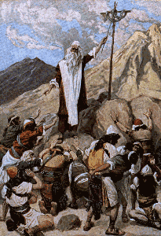But during one of the times when God failed
to provide food or water for his pets, (the Hebrews) they dared to complain and
he sent them "fiery" (poisonous) snakes which bit the people and many
of them died. When Moses asked God to take the snakes away, God commanded Moses
to make an idol for the people to bow down to, in violation of his own law.
This idol was a brass serpent which was placed on a pole. Any who had been
bitten by the snakes who looked at the idol would be cured (Numbers 21:5-9).
The Bible doesn't mention why God didn't just use his magic powers to heal
those who had been bitten. Why was it suddenly okay to worship a serpent, of
all things? The serpent was supposed to be evil wasn't it? It seems to us that
this story was stolen from some other mythology since God would never have
commanded his people to create an idol of a serpent to look up to for their
salvation.
While the Hebrews were traveling from Egypt to invade the land that God said
they could have for their own, they left a path of utter destruction in their
path (See The Bloody Bible). The king of one of the
heathen cities they approached saw their vast size and heard about what they
had done to the other cities they had passed through so he decided to call on a
wizard to curse the Israelites. This wizard was named Balaam and apparently he
talked with God just like the Israelite prophets. When the king's messengers
told Balaam that the king wanted him to curse the Israelites, Balaam told them
that he would first have to ask God about it. That night God came to Balaam and
asked him, "What men are these with thee?" (Numbers 22:9) We're not
sure why does God not already know who they are. Maybe he's just making
conversation with his wizard. So Balaam tells God that the king has asked him
to curse this group of people that are approaching the city. God tells Balaam
that he is NOT to go with the king's messengers. Balaam is forbidden to curse
the Israelites because they are God's chosen people and they are blessed
(Numbers 22:12). Modern Christians pretend that God doesn't deal with wizards
and sorcerers but here we have additional proof that this God plays both sides
against each other (See The Authors of Human
Misery). Balaam tells the messengers that God doesn't want him to curse the
Israelites. The messengers return to their king who sends them back to bribe
Balaam. This time Balaam calls on God and when God comes to Balaam this time
God tells him to "go ahead and go with them but say only what I tell you
to say." (Numbers 22:20)
The next day Balaam gets on his donkey and leaves with the messengers, just
as God told him to do but the Bible tells us that God was angry with Balaam
because he went (Numbers 22:22). What a wishy-washy God! Apparently God changed
his mind overnight because he sends an angel to block the path of Balaam's
donkey. After several attempts to make the donkey go, the donkey begins to talk
to Balaam, asking him "Why are you beating me when I have always served
you loyally?" Balaam procedes to argue with his donkey, until the angel
makes himself visible to Balaam. When Balaam sees the angel he is
understandably confused ("why is God blocking my path when he just told me
to go with the messengers last night?") and he tells the angel "I'll
go back home if you don't want me to go with them." Suddenly the angel
changes his tune and he tells Balaam that he can now go with the messangers but
he is to say only what God puts in his mouth. (The same thing God had told him
the night before) What is going on here? Other than the obsurdity of talking
animals, it seems like God has trouble communicating with his angels because
this angel didn't know that God had given Balaam permission to go with the
king's men the night before. Maybe there was a breakdown in the Godly message
server. Heavenly e-mail must not be all it's cracked up to be!
Balaam does what God has told him to do and blesses the Israelites in the
face of the king instead of cursing them like the king had desired. What is
Balaam's reward for his obedience? God has Moses kill him along with all the
rest of the five kingdoms of Midianites (Numbers 31:8). It really sucks to not
be one of God's chosen race.
The story of Samson is another favorite children's Bible story with many
facts conveniently left out of the children's version. To understand the
background of Samson and why he didn't cut his hair, we must first discuss the
Hebrew law of the Nazarite. According to God's law, a person could take a vow
of seperation and they would be called a "Nazarite." This vow was
taken so that a person would be holy or untouched by the law. A person who took
this vow had to abstain from wine or anything made with grapes, he never cut
his hair, and he never came in contact with anything that was dead. If the
person kept this vow, they were considered holy or righteous no matter what
else they did. So if a person took this vow, they could have sex with
prostitutes and still be considered holy. But if they didn't keep the vow, i.e.
they drank wine, cut their hair, or killed something, they were no longer
considered holy and they became accountable for whatever they had done before
because they defiled their seperation (Number 6:1-12).
Before Samson was born, an angel appeared to his mother (she was barren and
couldn't have children at that time) and told her that she was going to have a
son but he would be a Nazarite from birth. So she had to abstain from drinking
wine while she was pregnant and she was to never cut his hair. How a child can
take such a vow before it is old enough to understand the covenant is not
addressed by the angel. So Samson is born and he is blessed with mighty
strength because he is a Nazarite unto God. Samson falls in love with a
Philistine woman (not of God's chosen race) and he wants to marry her so he
tells his father to "get her for me because she pleases me." (Judges
14:3) While he and his parents are traveling to visit his future wife, he
encounters a lion and kills it with his bare hands. Samson is afraid that if
his parents learn about the lion, they will think that it is a sign from God
telling them that he shouldn't be marrying this woman who is not of his race,
so he hides the lion's body from them. According to the law of the Nazarite,
Samson should have lost his strength the first time he touched something that
was dead or the first time he killed something but for some reason, God lets
Samson remain a Nazarite, keeping his superhuman strength even after he breaks
the rules.
Samson's father makes a feast for the bride-to-be and her family and thirty
men show up at the party. Samson decides he will make a little profit from this
party and he makes a bet with the men at the party. He tells them that if they
can guess the answer to a riddle, he will give them 30 sheets and 30 changes of
clothes, but if they can't guess the answer in a week they would pay him 30
sheets and 30 changes of clothes. These men cannot guess the answer to the
riddle so they threaten Samson's fiance, telling her that if she doesn't tell
them the answer to the riddle, they will burn her and her father's house with
fire (Judges 14:15). She is able to get Samson to tell her the answer and she
tells the answer to the men. When the day arrives to answer the riddle, the men
have the right answer and Samson storms off to another city, "And the
Spirit of the Lord came upon him..." and he murdered thirty men and took
their property to pay off his gambling debt. (Judges 14:19) Interestingly each
time Samson murders someone it is after "the Spirit of the Lord comes upon
him." Again Samson has violated the vow of the Nazarite but he is still
considered "holy" and keeps his strength. After he payed off the
debt, he returned to his own city and the father of the woman he was going to
marry thought he had abandoned her so he gave her to another man to marry
(Judges 15:2).
After Samson's anger cools a little, he returns to take his bride, only to
find that she has been given to another man. In his anger, Samson captured 300
foxes (yeah, right) and tied burning sticks to their tails and set them loose
in the cornfields and vineyards of the Philistines, destroying their food
supply. The Philistines found out that Samson had destroyed their crops so they
in turn burned the woman he wanted to marry and her father to death with fire
(Judges 15:6). This enraged Samson and he went out and killed the men who burnt
his ex-fiance and her father. Now the Philistines are even angrier so they send
out an army to take Samson and bring him to justice. His own people tie him up
and deliver him to the Philistine army, but once again, "the Spirit of the
Lord came mightily upon him..." and he killed 1,000 Philistines with the
jawbone of an ass (Judges 15:14-15). Once more he violates the law of the
Nazarite with no consequences. After this incident, the Bible says that Samson
served as a judge in Israel for twenty years. We can only imagine the sort of
justice which he dished out during that period.
Later Samson goes to a city called Gaza and he has sex with a prostitute
(Judges 16:1). When the Philistines learn that he is in the whorehouse they try
to lay a trap to kill him in the morning but Samson surprises them by getting
up at midnight and tearing the gates of the city off their hinges and escaping
into the night. We must remind you that it's okay for Samson to have sex with
prostitutes because he is a Nazarite. I know quite a few men who wish they
could take the vow of the Nazarite today.
Then came Delilah, another prostitute that Samson fell in love with. After
numerous attempts she is able to learn the secret of his strength and she cuts
his hair and he loses his strength. Why it was okay for Samson to violate the
other statutes of the vow but not the one regarding the cutting of hair is
another of those mysteries of God. Supposedly, Samson regains his Godly
strength once his hair grows back (Judges 17:22). His hair acting like some
sort of magic steroids, he becomes strong enough to pull down the pillars of
the stadium and kills around 3,000 people. Completing the legend of Samson with
a final violation of the vow of the Nazarite, we are left to wonder what is the
point of making laws if selected individuals can violate them with impunity?
After seeing our critique of the Bible we are often told, "But that's
the OLD Testament!" as if God somehow has changed even when the Bible
states that God never changes (Malachi 3:6). The New Testament has its own
share of gross injustices and misinterpreted stories which we will be covering
in further detail in the near future. For now we refer you to our
Anti-tracts for a glimpse of the truth as
seen from the "other side" of the religious fence.
"And you shall know the truth, and the truth shall
set you free." - John 8:32
Return to
the Luciferian Liberation Front's Main Page.
E-Mail your questions and
comments.